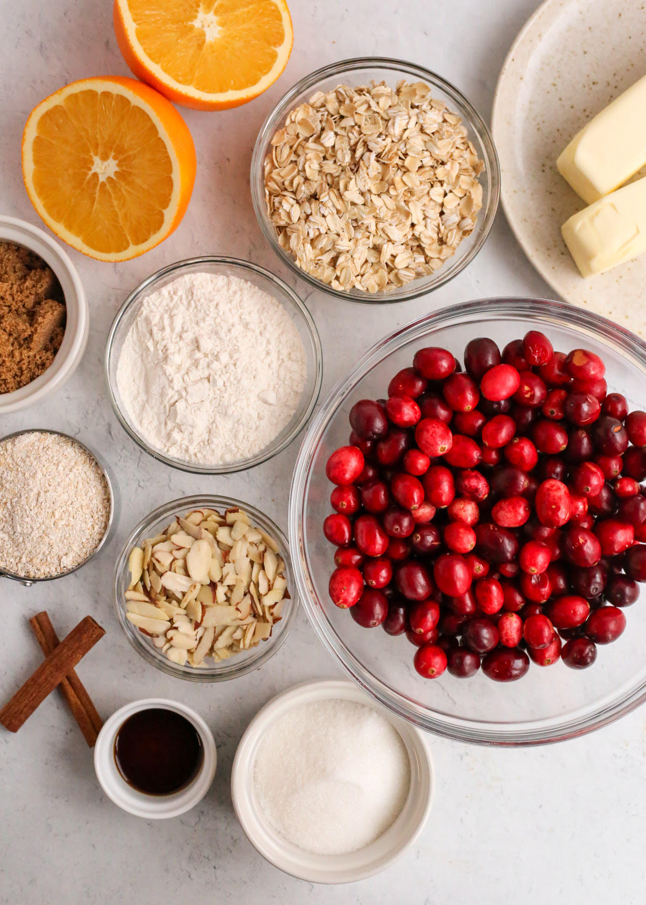
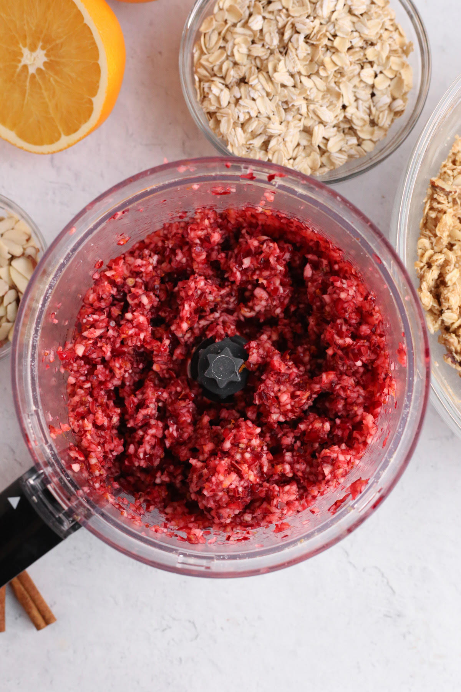
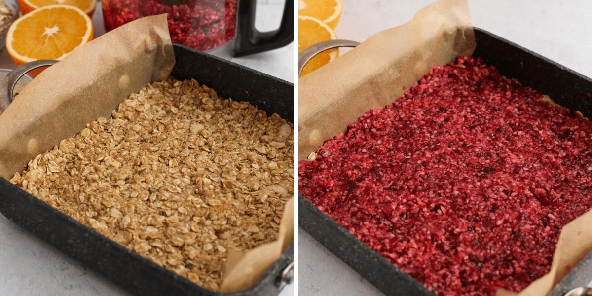

You'll also need all-purpose flour, sugar, brown sugar, baking soda, salt, vanilla extract, cinnamon, and extra oats for homemade oat flour.
Simply blend one cup of old-fashioned oats in a food processor until it reaches a fine consistency. Store extra oat flour in the fridge for future use.
Prepare a 9"x9" baking pan with parchment paper, leaving a slight overhang for easy removal. Preheat your oven to 350°F.
Pulse cranberries, sugar, and orange zest in a food processor until slightly chunky.
Mix dry ingredients, vanilla, and browned butter in a bowl until crumbly. Press half into the baking pan.
Spread the cranberry mixture evenly, then top with the remaining oat mixture.
After baking, your bars should look like this: